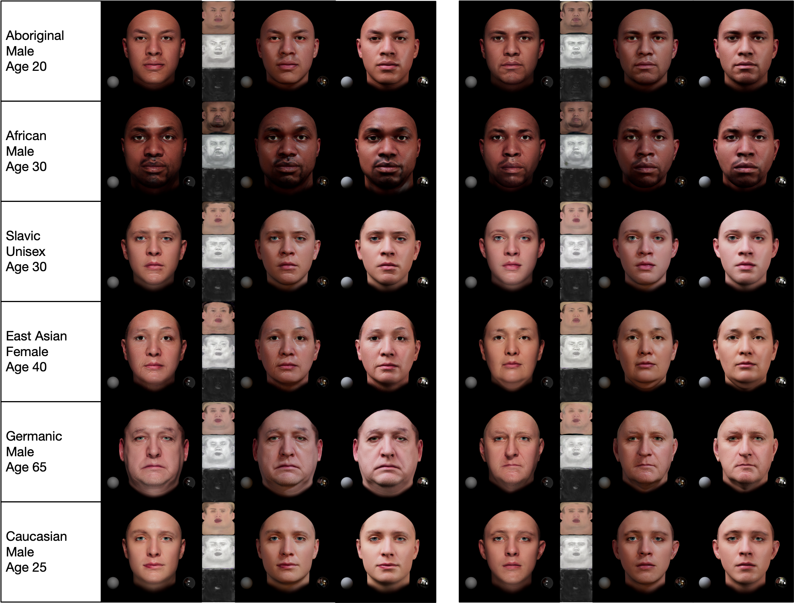
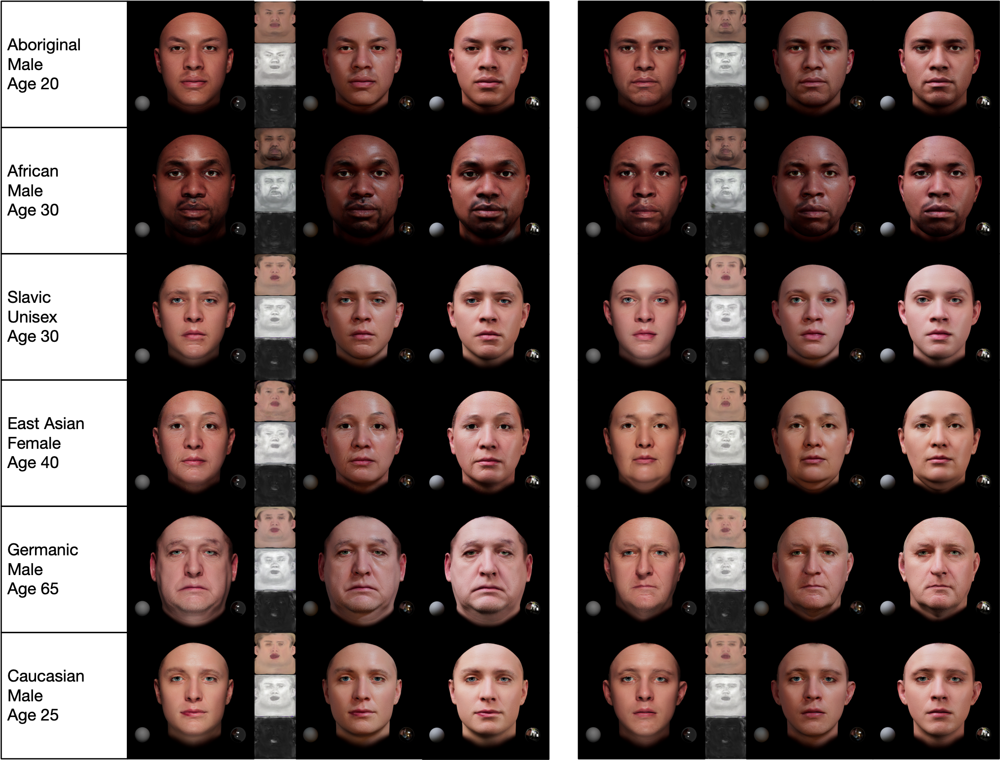

Diversity in Avatar Generation
Our system generates a wide variety of facial models with diverse ethnicities, ages, and genders. This diversity enables applications across entertainment, education, and social media.
Digital modeling and reconstruction of human faces serve various applications but are often hindered by the requirements of data capturing devices, manual labor, and suitable actors. This situation restricts the diversity, expressiveness, and control over the resulting models. We demonstrate that a semantically controllable generative network can provide enhanced control over the digital face modeling process.
To enhance diversity beyond the limited human faces scanned in a controlled setting, we introduce a novel data generation pipeline that creates a high-quality 3D face database using a pre-trained diffusion model. Our proposed data generation framework converts synthesized data from the diffusion model into high-quality scanned data. Using the extensive face models we obtained, which include geometry, clean diffuse albedo maps, and labels, we developed an efficient generator that accepts user-defined semantic attributes as input and concurrently generates geometry and albedo.
Our post-processing component subsequently creates full sets of physically-based facial assets including specular maps, displacement maps, and secondary facial geometries such as eyeballs and teeth. Our comprehensive system enables creating and editing high-quality face assets with unprecedented diversity and control.
Video Introduction (3:47)
Our 3D models include high-quality geometry, texture, and material properties that enable realistic rendering and viewing from any angle.
South Asian Female, Age 20
Native American Female, Age 55
Our system generates a wide variety of facial models with diverse ethnicities, ages, and genders. This diversity enables applications across entertainment, education, and social media.
Our system allows continuous control over age, enabling applications like aging simulation and character development.
Our system generates physically-based texture maps for high-quality rendering. Slide to explore different face models with their corresponding texture maps.
Albedo Map

Displacement Map

Specular Map
Rendered Result
Our system supports facial expressions and blendshape animations, making the avatars suitable for various interactive applications.
Aboriginal Female, Age 18
Celtic Female, Age 45
South Asian Male, Age 25
@article{cai2023text2avatar,
author = {Cai, Xunxuan and Xiang, Sitao and Li, Zongjian and Chen, Haiwei and Zhao, Yajie},
title = {Bringing Diversity from Diffusion Models to Semantic-Guided Face Asset Generation},
journal = {arXiv preprint},
year = {2025},
}